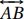

3 CIRCUNFERÊNCIAS EM TRIÂNGULOS
Até o momento foram apresentadas e associadas a um triângulo, a circunferência inscrita (Corolário 2.25), a circunferência circunscrita (Corolário 2.21) e a circunferência de nove pontos (Teorema 2.27). Neste capítulo serão apresentadas outras circunferências associadas ao triângulo, isto é, a Circunferência de Apolônio, as circunferências tritangentes (além da circunferência inscrita) e outras seis determinadas pelos lados do triângulo.
A fim de compreender profundamente as relações existentes entre os elementos de circunferências associadas a um dado triângulo, uma coleção de teoremas, corolários e propriedades são citados neste capítulo. Alguns tem sua validade demonstrada e outros não, por serem de verificação imediata, sem, no entanto, diminuir sua importância ou apreço.
Inicialmente é abordado o conceito de divisão de segmentos, onde é esclarecida a ideia de divisão proporcional de segmentos, tanto interna quanto exteriormente, e de divisão harmônica. Em seguida, é abordada a definição de bissetriz a partir de duas retas e são enunciados teoremas fundamentais para as seções que seguem. A partir daí, são apresentadas interessantes relações métricas que envolvem os principais elementos das circunferências tritangentes: os centros, os raios e os pontos de tangência.
3.1 Divisão de Segmento
Nesta seção é abordado o conceito de divisão de segmentos, tanto interna quanto externa; a divisão harmônica de um segmento e a razão de proporcionalidade, a fim de facilitar o entendimento de certos teoremas enunciados na próxima seção. Além disso, são tratadas algumas relações entre as medidas dos segmentos envolvidos e a razão de proporcionalidade resultante desta divisão.
3.1.1 Divisão Proporcional de um Segmento
Considere dois pontos A e B e o segmento AB formado por eles. Seja P um ponto no interior deste segmento. O ponto P divide interidnte o segmento AB em duas partes: AP e PB. A razão é chamada de razão de proporcionalidade na divisão interna do segmento AB.
No caso de K > 1 o ponto P encontra-se mais próximo do extremo B. No caso de K < 1 o ponto P encontra-se mais próximo do extremo A. No caso de K = 1, P é o ponto médio do segmento AB.
Agora considere novamente dois pontos A e B e o segmento formado por eles. Seja Q um ponto externo a este segmento, porém na mesma reta . O ponto Q divide exteriormente o segmento AB em duas partes, compondo novos segmentos a considerar: AQ e QB. A razão é chamada de razão de proporcionalidade na divisão externa do segmento AB pelo ponto Q.
No caso de K' > 1 o ponto Q encontra-se mais próximo do extremo B. Além disso, se K' = 2, QB = AB. No caso de K' < 1 o ponto Q encontra-se mais próximo do extremo A. Além disso, se , AQ = AB. Note que K' = 1 não ocorre pois o ponto Q é externo ao segmento AB.
3.1.2 Divisão Harmônica
Seja AB um segmento e P e Q pontos da reta tal que P divide interidnte o segmento AB e Q divide exteriormente o mesmo segmento. Dizemos que P e Q dividem \textit{harmonicamente} o segmento AB se ambas divisões ocorrem na mesma razão de proporcionalidade. Neste caso os pontos P e Q são conjugados harmônicos com relação aos pontos A e B.
Dados três pontos colineares A, B e C, deseja-se obter o conjugado harmônico D do ponto C com relação aos pontos A e B, ou equivalentemente, os pontos C e D tais que dividem o segmento AB interna e exteriormente na mesma proporção, ou ainda, os pontos C e D tais que dividem harmonicamente o segmento AB, e que valha a relação: $$\frac{AC}{BC} = \frac{AD}{BD}.$$
Em tais condições, os segmentos AB e CD são ditos segmentos harmônicos.
Considere um segmento AB que contém um ponto C em seu interior, tal que C não é ponto médio de AB. É possível encontrar um ponto D exterior de AB que é o conjugado harmônico de C com relação aos pontos A e B.
Seja E um ponto arbitrário, mas não colinear com AB, e seja p = AE. Tomemos GF um segmento de uma reta , paralela a AE, que contém B. O ponto G é definido pela interseção da reta com a reta . Além disso, o ponto F é definido de modo que BG = BF = q. Seja D o ponto de interseção entre as retas e . Nestas condições, tem-se dois pares de triângulos semelhantes: ΔAEC ≃ ΔBGC e ΔAED ≃ ΔBFD, ambas semelhanças pelo caso ângulo-ângulo.
Devido a estas semelhanças, temos e . Mas BG = BF.
Portanto, $$\frac{AC}{BC}=\frac{AD}{BD} \quad \Leftrightarrow \quad \frac{BC}{AC}=\frac{BD}{AD}.$$
Observação: Seja p ÷ q a razão de proporcionalidade. Se p > q, temos AC > CB e AD > BD, de modo que o ponto médio M de AB fica fora do segmento CD. A mesma posição relativa dos pontos M, C, D prevalece, se p < q, isto é, o ponto médio M de AB continua fora do segmento CD.
Se p = q, o ponto C coincide com M, e não há ponto de divisão externo, pois EF é paralelo a AB.
Se os pontos C e D dividem o segmento AB interna e exteriormente na razão p ÷ q, os pontos B e A dividem o segmento DC interna e exteriormente na razão $$(p + q): (p - q).$$
Pela divisão harmônica, ilustrada na figura 3.1 tem-se $$\frac{AC}{BC}=\frac{AD}{BD}=\frac{p}{q}.$$
Dessa forma, $$\frac{AC}{BC}= \frac{p}{q} \quad \text{e} \quad \frac{AD}{BD} = \frac{p}{q}.$$
Assim, $$\frac{(AC + BC)}{BC}= \frac{(p + q)}{q} \quad \text{e} \quad \frac{(AD - BD)}{BD} = \frac{(p - q)}{q}.$$
Substituindo AC + BC e AD - BD por AB, tem-se: $$\frac{AB}{BC}= \frac{(p + q)}{q} \quad \text{e} \quad \frac{AB}{BD} = \frac{(p - q)}{q}.$$
Logo, $$AB= \frac{(p + q)}{q} \times BC \quad \text{e} \quad AB = \frac{(p - q)}{q} \times BD.$$
Portanto $$\frac{BD}{BC} = \frac{(p + q)}{(p - q)}.$$
Por outro lado, tem-se $$\frac{AC}{BC}=\frac{AD}{BD} = \frac{p}{q}$$
Dessa forma $$\frac{AC}{BC}= \frac{p}{q} \quad \text{e} \quad \frac{AD}{BD} = \frac{p}{q}.$$
Assim $$\frac{AC}{(AC + BC)}= \frac{p}{(p + q)} \quad \text{e} \quad \frac{AD}{(AD - BD)} = \frac{p}{(p - q)}.$$
Substituindo AC + BC e AD - BD por AB, tem-se: $$\frac{AC}{AB}= \frac{p}{(p + q)} \quad \text{e} \quad \frac{AD}{AB} = \frac{p}{(p - q)}.$$
Dessa forma $$AB = \frac{(p + q)}{p} \times AC \quad \text{e} \quad AB = \frac{(p - q)}{p} \times AD.$$
Logo $$\frac{AD}{AC} = \frac{(p + q)}{(p - q)}.$$
Se AB = a e CD = b, temos $$b = \frac{2 apq}{(p^2 - q^2)}.$$
De fato, tem-se: $$\frac{AD}{AB} = \frac {p}{(p - q)}, \quad \frac{AC}{AB} = \frac{p}{(p + q)} , \quad CD = AD-AC;$$ daí, fazendo as substituições devidamente,
\begin{align*} CD = b &= AD - AC\\ &= \dfrac{p}{(p - q)}\cdot a - \dfrac{p}{(p + q)}\cdot a\\ &= \dfrac{pa(p + q) - pa(p - q)}{(p^2 - q^2)}\\ &= \dfrac{pa[p + q - (p - q)]}{(p^2 - q^2)}\\ &= \dfrac{pa[p + q - p + q]}{(p^2 - q^2)}\\ &= \dfrac{pa[2q]}{(p^2 - q^2)}\\ &= \dfrac{2apq}{(p^2 - q^2)}. \end{align*}
Sejam os pontos A, B, C e D colineares e harmônicos. O pé das perpendiculares baixadas sobre uma reta qualquer, a partir destes pontos, também são pontos harmônicos.
De fato, as perpendiculares são quatro retas paralelas; logo pelo Teorema Fundamental de Proporcionalidade (2.17), os segmentos determinados por seus pés são proporcionais aos segmentos correspondentes, portanto são pontos harmônicos.
Se os pontos C, D dividem o segmento AB harmonicamente na razão p ÷ q, o ponto médio O do segmento CD divide o segmento AB exteriormente na razão p² ÷ q².
Deseja-se mostrar que o ponto O divide AB na razão $$\frac{AO}{BO} = \frac{p^2}{q^2}.$$
Temos: $$AO = \frac{1}{2}CD + AC, \quad BO = \frac{1}{2}CD - BC.$$
Substituindo $$CD = \frac{2apq}{(p^2 - q^2)} \text{, } AC = \frac{pa}{(p + q)} \text{, } BC = a - AC \text{,}$$ conforme o Teorema 3.1 e Corolário 3.2, obtem-se: $$AO = \frac{ap^2}{(p^2 - q^2)}, \quad BO = \frac{aq^2}{(p^2 - q^2)};$$ daí a relação: $$\frac{AO}{BO} = \frac{p^2}{q^2}.$$
Seguindo as notações do Corolário 3.2, temos: $$OA.OB = OC^2.$$
Note que CD = 2·OC. Dai, \begin{align*} OA.OB &= \dfrac{ap^2}{(p^2 - q^2)}.\dfrac{aq^2}{(p^2 - q^2)} = \dfrac{a^2.p^2.q^2}{(p^2 - q^2)^2}\\ &= \left[ \dfrac{a.p.q}{(p^2 - q^2)} \right]^2 = \left[ \dfrac{2}{2} . \dfrac{a.p.q}{(p^2 - q^2)} \right]^2 \\ &= \left[ \dfrac{1}{2} . \dfrac{2.a.p.q}{(p^2 - q^2)} \right]^2 = \left[ \dfrac{1}{2} . CD \right]^2 \\ &= \left[ OC \right]^2. \\ \end{align*}
Antes de irmos ao próximo teorema, observemos que M e O são, respectivamente, os pontos médios dos segmentos AB e CD. Logo:
\begin{align*} MO = AO - AM &= AO - \dfrac{1}{2}AB\\ &= \dfrac{ap^2}{(p^2 - q^2)} - \dfrac{1}{2}\cdot a\\ &= \dfrac{2ap^2 - a(p^2 - q^2)}{2(p^2 - q^2)}\\ &= \dfrac{a(p^2 + q^2)}{2(p^2 - q^2)}. \end{align*}
A soma dos quadrados de dois segmentos harmônicos é igual a quatro vezes o quadrado da distância entre os pontos médios desses segmentos, ou seja: $$AB^2 + CD^2 = 4 MO^2.$$
Temos:
$$\begin{align*} AB^2 + CD^2 &= a^2 + \left[ \dfrac{2apq}{(p^2 - q^2)} \right]^2\\ &= a^2 + \dfrac{4a^2p^2q^2}{(p^2 - q^2)^2}\\ &= \dfrac{a^2(p^2 - q^2)^2 + 4a^2p^2q^2}{(p^2 - q^2)^2}\\ &= \dfrac{a^2 \Big((p^2)^2 - 2.p^2.q^2 + (q^2)^2 \Big) + 4a^2p^2q^2}{(p^2 - q^2)^2}\\ &= \dfrac{a^2 (p^2)^2 - a^2 2.p^2.q^2 + a^2 (q^2)^2 + 4a^2p^2q^2}{(p^2 - q^2)^2}\\ &= \dfrac{a^2 (p^2)^2 + 2a^2.p^2.q^2 + a^2 (q^2)^2}{(p^2 - q^2)^2}\\ &= \dfrac{a^2 \Big[(p^2)^2 + 2.p^2.q^2 + (q^2)^2\Big]}{(p^2 - q^2)^2}\\ &= \dfrac{a^2 (p^2 + q^2)^2}{(p^2 - q^2)^2}\\ &= \left[\dfrac{a(p^2 + q^2)}{(p^2 - q^2)} \right]^2 \\ &= \left[2 MO \right]^2 = 4 MO^2. \end{align*} $$